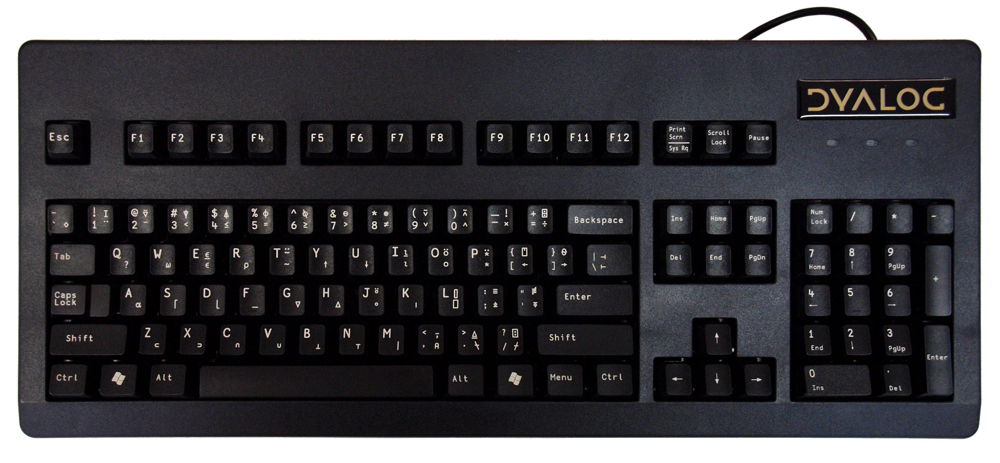

Appendix B - Ten minutes to RIDE¶
This is a short introductory guide to Dyalog APL’s RIDE interface.
RIDE stands for Remote Integrated Development Environment.
When you code using Dyalog APL, you’ll use two key software components.
The APL interpreter which executes APL code.
A developer interface which allows you to write code, invoke the interpreter and debug code when necessary.
Most new users develop using RIDE. Other interfaces are available, including an open source kernel for jupyter notebooks, but RIDE is recommended and is part of the default installation of Dyalog APL.
Dyalog’s installation depends on the target environment. Windows users, maxOS X users, Linux users with Intel/AMD hardware and Raspberry Pi users will find information specific to their environment on the Dyalog website.
TODO: add links.
This short guide will help you get started with RIDE and APL after you have installed the appropriate software.
RIDE works the same way in all the environments listed above.
The way we’ll work¶
You can use several ways to RIDE to the APL interpreter.
We’ll focus on the simplest, where RIDE and APL are running on the same computer. The illustrations below were made using a Raspberry Pi, but the process will be the same for any supported environment.
Starting APL (and RIDE)¶
Click on the Dyalog APL icon. The location will depend on your Operating System.
Windows: You should see the icon on your desktop. If not, use the search box.
maxOS X: Use the launchpad app in the usual way.
Linux : (including Raspberry Pi) Find the icon under the programming sub-menu
Warning
Do not click on the Dyalog APL (TTY) or Ride 4.3 icons! They have their uses but they won’t do what you want right now.

Once RIDE has started you’ll see a short flash screen, followed by this:
Now you are away to the races. That’s slang for you’re good to go :)
Type 2 + 2 and press Enter.
RIDE’s session window is an APL REPL - a Read-Eval-Print-Loop.
It’s also an editor, and it has a very useful workspace explorer. We’ll see how to use those shortly.
First, let’s look at how to enter those beautiful characters that give APL so much of its expressive power. (You can see them all at the top of the RIDE window).
Entering APL characters¶
There are several ways in which you can enter those APL characters that are not on a standard keyboard.
You can click on a character from the toolbar ad the top of the RIDE window. The character will be copied into your RIDE session window.
You can use a prefix key followed by another key based on the layout of an APL keyboard (see below). In RIDE, the default prefix key is the backtick ` but this is configurable.
You can use the prefix key and then start typing the name of the character you want to enter. For example, if you type `r the character
⍴will appear in the session window.You can use the Super key (
Crtlon Windows,Cmdon macOS X,Windowson linux) as a shift key.
The traditional APL keyboard¶
Here’s the traditional keyboard layout.

If you get hooked on APL (and it is addictive for some) you can buy a keyboard from Dyalog with the APL symbols on it. Here’s a US version; a UK version is also available.

Making good use of the session window¶
Earlier you entered 2 + 2 in the session window.
If you move the cursor back to that line, change it to 2 + 3 and press enter, you’ll see a screen like this:
The original line has been restored, and your new line has been shown below it, followed by its result. That’s a really useful feature which lets you experiment with different versions of your code.
As you can see above, the session window has another useful feature. When it’s your turn to type, APL moves the cursor six spaces to the right, so you can easily see what you typed and what APL responded.
Defining functions¶
The code in this book was defined using dfns (direct definition functions). As you have seen,
these are defined using braces ({ and }).
Direct definition is not the only way to create functions and operators in APL,
but it’s concise and promotes a pure functional programming style.
It’s easy to define dfns in the RIDE.
In the RIDE session window, type positive ← {⍵/⍨⍵>0} and press Enter.
Then enter positive ¯3 + ⍳5.
The function returns the vector 1 2.
Listing functions¶
You can enter the system command )fns to list all the functions that you’ve defined.
Try it now. You should see a single name positive.
Editing functions¶
You’ve seen how to define a single-line dfn, but you’ll often want to define a function with more than one line.
There are several good reasons to do so.
You may want to add a comment line to the start of your dfn so that readers (yourself included!) know what the function is supposed to do.
Sometimes dfns need to work their way towards their result in several stages. You can use diamond ‘⋄’ to separate multiple statements on a single line, but it’s often more readable to split the dfn into multiple lines. That’s particularly true if you are using guards to implement conditional statements.
You can use RIDE’s Tracer to debug multi-line dfns. You’ll find details of the Tracer in section 6.3 of the RIDE user Guide.
You can create or edit a single or multi-line dfn using RIDE’s Edit window.
The RIDE Editor¶
There are several ways to invoke the RIDE editor. It’s a text editor that makes it easy to see and edit dfns. You can use it to edit other things as well.
One simple way to edit something is to use the )ED system command.
Enter ‘)ED positive’ in RIDE’s session window.
You should see this:
Now you can click in the edit window, make changes to the function, and click on the ‘x’ or type Escape to close the window.
More information¶
There’s lots more you can do with RIDE.
There’s a user manual, and there are a number of videos on the Dyalog Website.